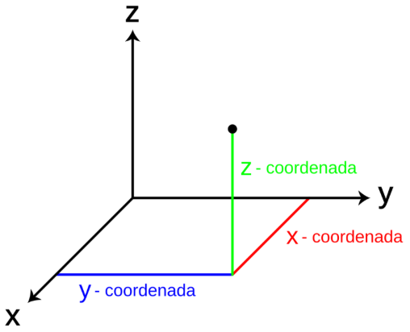
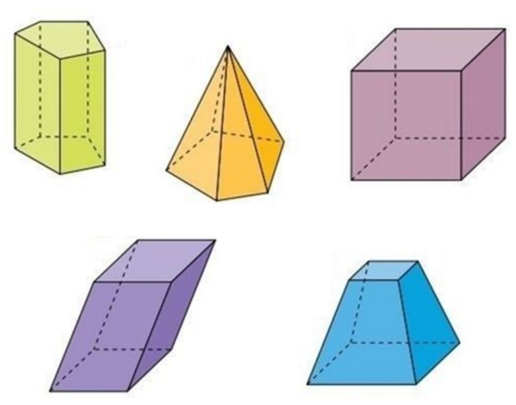
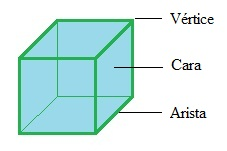
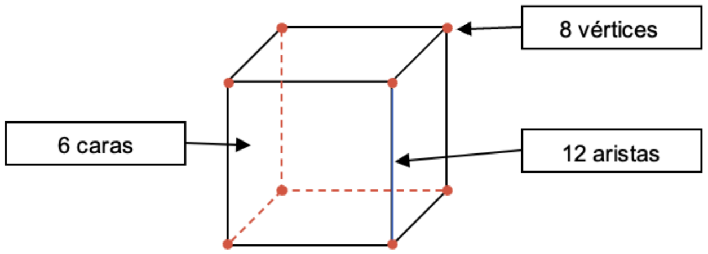
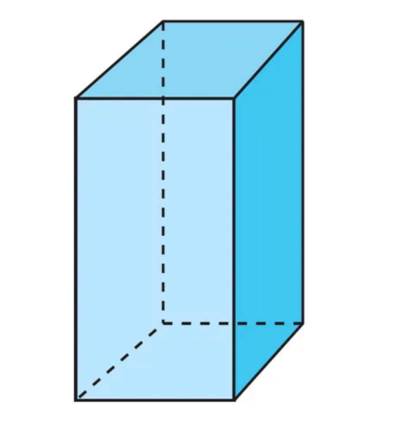
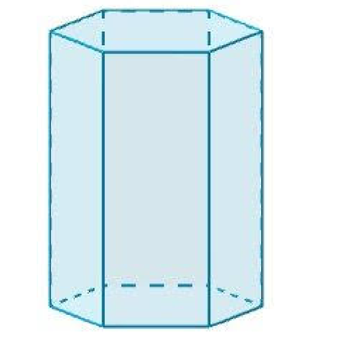
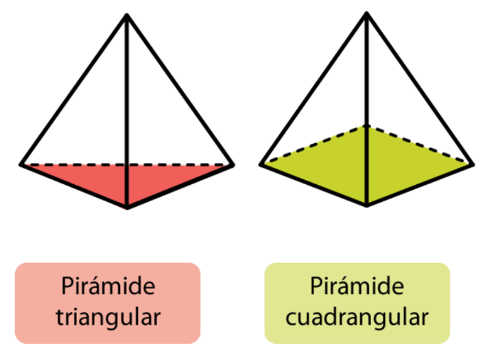
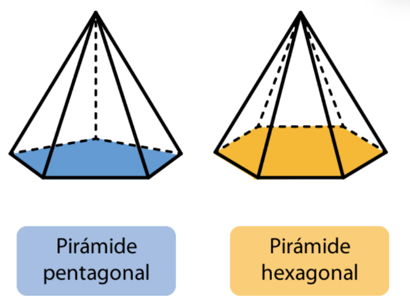
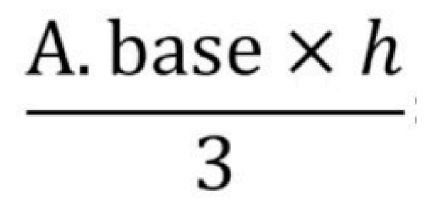

Hasta ahora hemos visto figuras que se pueden dibujar en un papel, pero si tomamos un vaso de agua, notaremos que, aunque parte de su forma es circular, no todo puede representarse en una superficie plana. Eso es porque vivimos en un mundo de tres dimensiones.
Sin complicarnos, pensemos que el espacio es como un gran “plano” que tiene tres direcciones o coordenadas: hacia adelante, hacia los lados y hacia arriba.
Para no complicarnos, imaginámoslo de otra manera. Piensa que eres un lápiz. ¿Cómo te mueves? Puedes moverte hacia adelante y hacer una línea, lo mismo pasaría si te movieras hacia los lados. Pero, ¿qué pasa si te mueves hacia arriba? No puedes dibujar una línea, y es por eso que cuando dibujamos en un papel, solo podemos ver dos dimensiones. En el mundo real, hay una tercera dimensión, y lo que podemos ver en todo lo que esta a nuestro alrededor. Todos esos objetos son sólidos geométricos.
Un sólido geométrico es una figura que existe en tres dimensiones: largo, ancho y alto. Por eso ocupa un lugar en el espacio y tiene volumen, es decir, ocupa espacio dentro de sí mismo.
Partes de un sólido:
El volumen
El volumen es el espacio que ocupa un sólido geométrico. Así como el área mide la superficie, el volumen mide cuánto espacio hay dentro de un objeto. Por eso, se expresa en unidades cúbicas (por ejemplo, cm³ o m³). Imagina un vaso o una caja: el volumen es todo lo que puedes poner dentro para llenarlo.
El cubo
Tiene 6 caras cuadradas iguales, 12 aristas iguales y 8 vértices. Dando un ejemplo bastante cotidiano, el dado es un cubo.
Para hallar su volumen tenemos que primero hallar el área de la base y luego lo multiplicar ese valor por su altura. En la siguiente fórmula, "V" su volumen, "Ab" el área de la base y "h" la altura.
En el caso del cubo, como todas sus aristas son iguales: 𝑉 = 𝐿³.
El prisma
El prisma es similar al cubo, pero no todas sus caras son iguales. Tiene dos bases iguales y paralelas, y sus demás caras son rectángulos. La altura se mide entre las dos bases. Las bases pueden ser cualquier polígono: triángulo, pentágono, hexágono, etc.
Para hallar su volumen tenemos que primero hallar el área de la base y luego lo multiplicar ese valor por su altura. En la siguiente fórmula, "V" su volumen, "Ab" el área de la base y "h" la altura.
Cumple la misma fórmula que el cubo. Es importante resaltar que sus bases pueden ser cualquier polígono, de esa manera tenemos prismas triangulares, pentagonales, hexagonales, etc. De esta manera, la base será el polígono distinto de las caras laterales (por ejemplo, el triángulo en un prisma triangular). La imagen de abajo es un ejemplo de un prisma hexagonal.
La pirámide
La pirámide se diferencia del prisma porque solo tiene una base. El otro extremo termina en un vértice. Según la forma de la base, hay pirámides triangulares, cuadrangulares, pentagonales, etc. Aquí hay algunos ejemplos.
 El volumen de una pirámide equivale a un tercio del volumen de un prisma con la misma base y altura. Esto lo puedes comprobar haciendo un experimento: Si llenas tres pirámides con la misma base y altura y las viertes en un prisma igual, verás que se llena exactamente.
1. El perímetro de una figura se obtiene:
2. ¿Qué unidad se usa para medir el área?
3. Si un cuadrilátero tiene lados de 10u, 10u, 10u y 10u, su perímetro es:
4. El área de un cuadrilátero se calcula:
5. El área de un triángulo con base 8u y altura 6u es:
6. El perímetro de un rectángulo de 12u de largo y 5u de ancho es:
7. Si un triángulo tiene base 10u y altura 5u, su área es:
8. ¿Cuál de las siguientes opciones describe mejor la diferencia entre perímetro y área?
9. Si un cuadrilátero tiene base 15u y altura 4u, su área es:
10. El área de un triángulo con base 12u y altura 10u es:
11. Si un jardín tiene forma de cuadrilátero con lados 20u, 20u, 15u y 15u, su perímetro es:
12. Imagina que quieres cercar y luego cubrir con pasto un terreno rectangular de 18u de base y 7u de altura. ¿Cuánto miden el perímetro y el área respectivamente?